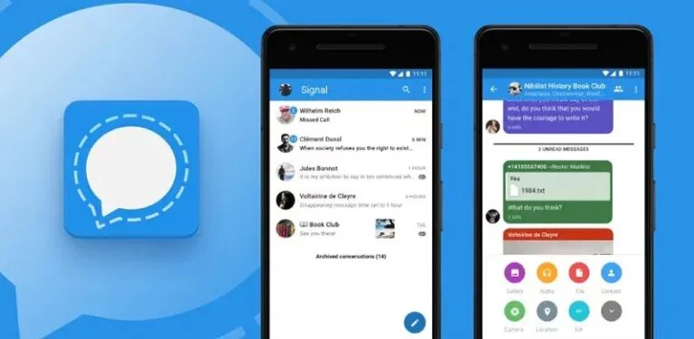
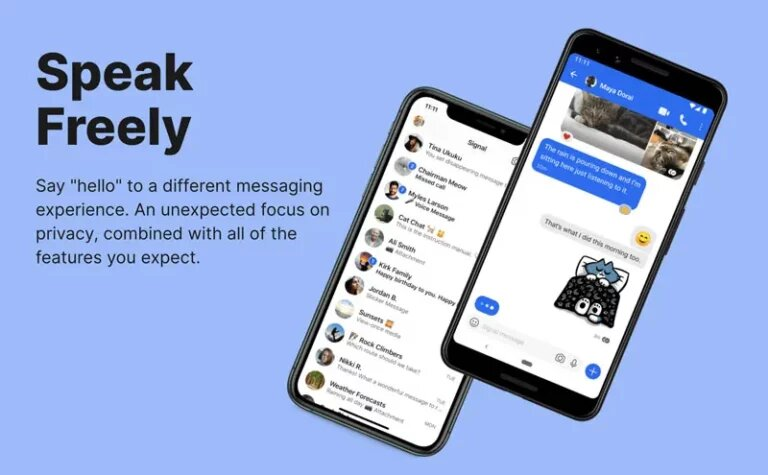

Signal is simply a messaging app like WhatsApp, iMessage, Facebook Messenger. Signal, an encrypted messaging app, is a service that started in 2015, but this became more popular with the killing of George Floyd, a black man in police custody on May 25.
Because of this murder, protests about racial discrimination arose all over the world, including America. Because the Signal app is a secure or private messaging system, many protesters were motivated to exchange messages through this app rather than other means of communication. However, to date, the Signal app has managed to win the favor of tech giants, cyber security experts, journalists, government officials and many others.

The Signal app is available as a free app for Android, iOS, Windows, Mac and Linux. Also, this service is available for free for browsers including chrome.
This app is becoming extremely popular today because of the extra security protocols that users get through this service. And another reason is that it includes all the basic messaging tools you need (read receipts, emoji support, group chats, voice and video calls). Just like WhatsApp, the Signal app uses your mobile phone number to identify you to your contacts, so there will be no more usernames or passwords to remember.
Uniquely, Signal can also be used to send standard text messages (SMS) and MMS on Android. However, Google has decided to provide this facility as a chat feature in the Google message app, which is used by a large number of users in the world. Because of this, the Signal app will have to face a lot of competition in the near future.
Usually, your phone number is used to verify your identity as well as the setup process of an app. After entering the number, you will receive a code as a message to your phone number to verify your identity. After that, you have to enter a four-digit pin number for further security verification.

Among the unique features of this messaging app is the ability to set settings to delete individual conversations after a certain time. To enable this feature, click on the user profile and toggle the “Disappearing Messages” feature.
Because of the “end-to-end encryption” process, many people can call Signal a more secure application. However, messages sent by Signal are secure only if both the sender and recipient use the app. If you prefer to communicate via Signal, you can also invite someone to download it. And it is possible to block someone's contact easily through this application.
If you are concerned about someone accessing the Signal app from your phone, as a more secure measure, you can lock the app with the passcode or fingerprint that is normally used to lock your phone.
It can be pointed out that this app has been created as an open source as one more reason to win everyone's trust. Because of this, all the security weaknesses are fixed very quickly. Also, it is not owned by any big technology company, i.e. Google, Facebook or Twitter, and is set up as a non-profit organization.
That's why it doesn't need to sell its users' data or use it for targeted advertising to get income or profit. For this reason, people who are very interested in privacy like Edward Snowden and people from actors and actresses to government employees all over the world have put their trust in this.
So don't forget to use this app and share your thoughts with us.
Sources: Business Insider,
Sources: Popular Mechanics,
Sources: Digital Trends,< /a>
Sources: TechNews.LK,
Sources: Techroom